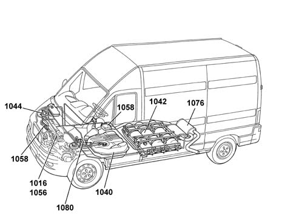
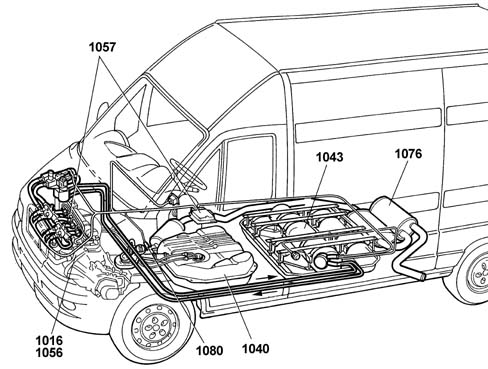
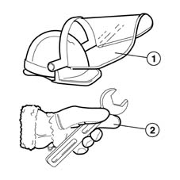
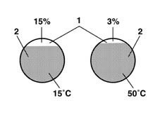

ASSEMBLY INDEX
- Path
- Descriptions > 10 ENGINE > ASSEMBLY INDEX
- Kind
- system description
- Applies to
- engines: 2.0 16V; all production periods; only with equipment: Methane and GPL
- Interactive page
- https://sloeber94.github.io/elrnDB-fDct/en/#/244000371
Applies to: engines: 2.0 16V; all production periods; only with equipment: Methane

GLOSSARY
Hardened and tempered steel
Condensation
Denotation
CONSTRUCTION SPECIFICATIONS
Fuel supply system
Air supply system
Exhaust system
Emission control system
COOLING SYSTEM
Applies to: engines: 2.0 16V; all production periods; only with equipment: GPL

GLOSSARY
Aramidic
LPG
Calorific power
Evaporation
Endothermic
WARNINGS AND PRECAUTIONS

CONSTRUCTION SPECIFICATIONS

Fuel supply system
Air supply system
Exhaust system
Emission control system
Applies to: engines: 2.0 16V; all production periods